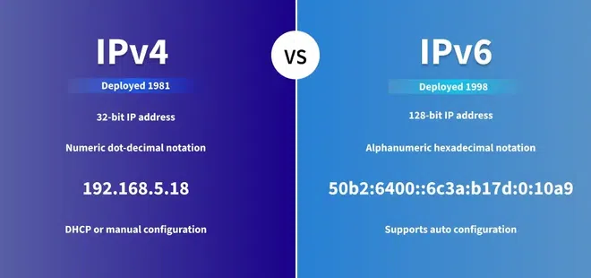

IP Address
Category: Networking & Identification
Definition
An IP Address (Internet Protocol Address) is a unique numerical label assigned to each device connected to a computer network that uses the Internet Protocol for communication.
The Two Main Roles
An IP address serves two principal functions:
- Host Identification: Identifying a specific device (like your phone or a server).
- Location Addressing: Providing the path so that the network knows where to send the data packets.
IPv4 vs. IPv6
As the Internet grew, the way we write IP addresses had to change:
- IPv4: The traditional format consisting of four numbers separated by dots (e.g.,
192.168.1.1). It allows for about 4.3 billion unique addresses. - IPv6: The newer version created because we ran out of IPv4 addresses. It uses a much longer format (e.g.,
2001:0db8:85a3:0000:0000:8a2e:0370:7334).
Visual Comparison

Dynamic vs. Static Addresses
In a business context, servers usually have Static IPs (they never change), while your home devices usually have Dynamic IPs (assigned temporarily by your service provider).